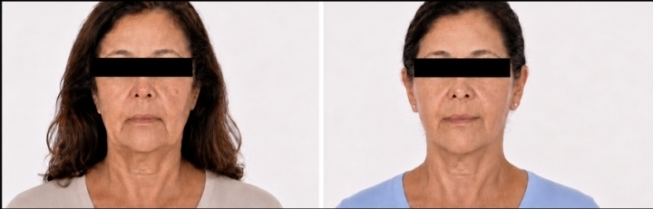
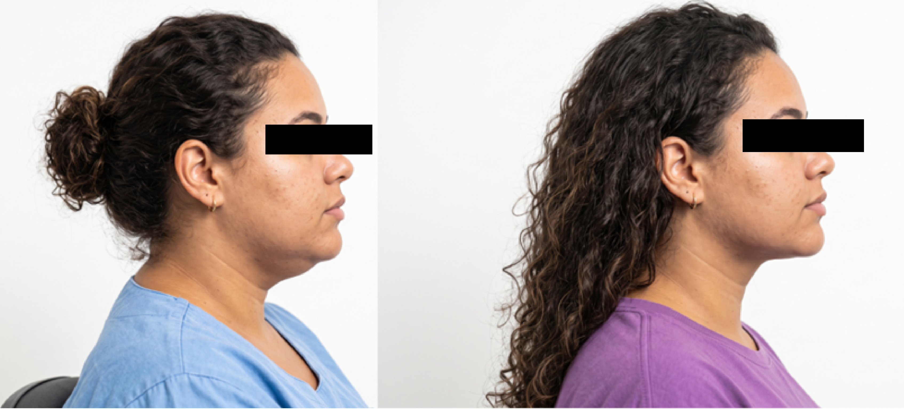
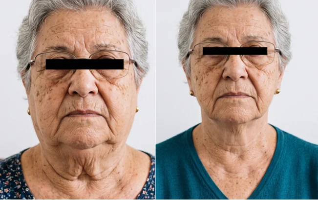
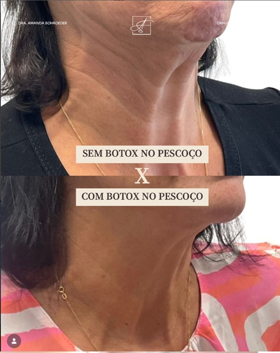

“Pescoço de peru”
Pode representar sobra e perda de elasticidade da pele abaixo do queixo e ao longo do pescoço. Em alguns casos, há também participação do músculo e da face.
Quando o incômodo está na pele solta, nas bandas do pescoço, na papada ou na perda da linha mandibular, o lifting cervical pode ser uma possibilidade. A avaliação confirma se ele é suficiente, se deve ser associado ao tratamento da face ou se outra abordagem seria mais adequada.
Dra. Amanda Schroeder · Cirurgia Plástica · CRM-SP 191605 · RQE 110472 · Pinheiros
Consulta particular em Pinheiros · Nota fiscal para reembolso

Os pacientes nem sempre usam termos médicos para descrever o pescoço. A avaliação traduz essas percepções em alterações anatômicas e diferencia pele, gordura, músculo e estrutura.
Pode representar sobra e perda de elasticidade da pele abaixo do queixo e ao longo do pescoço. Em alguns casos, há também participação do músculo e da face.
Pode envolver gordura superficial, gordura mais profunda, flacidez de pele, posição do queixo ou uma combinação desses fatores. Lipo de papada e lifting cervical não são equivalentes.
Bandas verticais que podem surgir pela ação do músculo platisma. A presença de bandas não significa automaticamente que uma cirurgia seja necessária.
Descreve a perda de definição entre o rosto e o pescoço. A causa pode estar no próprio pescoço, na queda da face ou nas duas regiões.
A avaliação separa os componentes da queixa para evitar tratar apenas a parte mais visível quando a causa principal está em outra camada.
A perda de elasticidade pode produzir flacidez. Retirar apenas gordura pode aumentar a percepção de pele solta em alguns casos.
O volume pode estar em planos superficiais ou mais profundos. A lipoaspiração trata apenas componentes selecionados.
Bandas e afastamento muscular podem alterar o ângulo do pescoço e exigir uma abordagem própria.
A queda da face, a projeção do queixo e a estrutura óssea influenciam a definição cervical. Tratar apenas o pescoço pode ser insuficiente.
O exame identifica se predominam flacidez de pele, gordura, bandas musculares, queda da face, estrutura do queixo ou uma combinação desses fatores.
Se você já considera o lifting cervical, a consulta parte dessa hipótese e verifica se ela corresponde à sua anatomia e aos seus objetivos. Se ainda não sabe qual procedimento procura, a avaliação também pode organizar as possibilidades sem pressão para decidir.
Depois de compreender o que pode causar a queixa e quando a cirurgia pode fazer sentido, observe contorno, continuidade entre face e pescoço e preservação das características individuais. Cada caso tem anatomia, técnica, associações e evolução próprias.

A vista frontal ajuda a observar contorno e continuidade sem avaliar apenas uma região isolada.

Este caso não representa lifting cervical. Ele ilustra por que gordura localizada e flacidez exigem indicações diferentes.

A vista frontal permite observar a relação entre face, linha mandibular e região cervical, preservando as características individuais.
Casos reais com finalidade educativa; cada anatomia, indicação e evolução é individual, sem garantia de resultado semelhante. Riscos e eventuais revisões são discutidos na consulta.
Casos reais são educativos e não garantem resultado semelhante. Riscos, intercorrências e eventual revisão são avaliados individualmente na consulta.
Os resultados ajudam a visualizar possibilidades, mas o nome da queixa e uma fotografia não determinam a técnica. Cada abordagem atua em componentes diferentes do contorno.
Trata gordura localizada selecionada quando a pele tem elasticidade suficiente e o problema não depende principalmente do músculo ou da face.
Pode tratar flacidez, bandas do platisma e perda do contorno cervical quando uma intervenção estrutural é necessária.
Pode ser considerado quando a queda da face participa da perda da linha mandibular e tratar apenas o pescoço seria insuficiente.

A toxina botulínica pode atuar sobre bandas musculares leves em algumas anatomias. Não substitui o lifting quando predominam flacidez de pele, perda estrutural do contorno ou participação importante da face.


O procedimento pesquisado entra na conversa. A técnica é confirmada depois do exame para endereçar sua queixa. Na consulta presencial em Pinheiros, a avaliação organiza indicação, alternativas, cicatrizes, riscos, recuperação e próximos passos antes de qualquer decisão.
O prazo depende de o pescoço ser tratado isoladamente ou em conjunto com a face e outros procedimentos.
As incisões podem acompanhar o contorno da orelha, seguir para a região posterior da orelha e a linha do cabelo. Pode existir uma pequena incisão abaixo do queixo. A extensão depende de o tratamento ser cervical isolado ou associado à face.
Edema, tensão, equimoses, curativos e necessidade de apoio podem fazer parte desse período.
Retornos, avaliação das incisões e retomada gradual dos movimentos.
Algumas pessoas conseguem retomar atividades sociais leves; outras precisam de mais tempo.
Os sinais externos tendem a diminuir e o retorno à rotina é liberado de forma gradual.
Contorno, edema e sensibilidade continuam evoluindo.
As cicatrizes e o edema residual continuam amadurecendo ao longo dos meses.
A faixa pode ser utilizada em alguns planos e por períodos diferentes. Dormência, sensação de tensão, edema e alterações temporárias de sensibilidade podem ocorrer. Genética, qualidade da pele, tabagismo, tensão, cuidados locais e intercorrências influenciam a cicatrização.
Segurança não é um exame isolado. Ela depende da seleção adequada, do preparo, do ambiente, da anestesia e do acompanhamento.
Histórico de saúde, medicamentos, tabagismo e fatores de risco.
Solicitados conforme idade, condições clínicas e porte do procedimento.
Estrutura e estratégia anestésica escolhidas de acordo com o plano individual. Quando indicados, os procedimentos podem ser programados no Hospital Sírio-Libanês, Hospital Nove de Julho, Hospital Alemão Oswaldo Cruz ou outras instituições criteriosamente selecionadas.
Orientações claras, acompanhamento próximo e canal para dúvidas durante a recuperação.
Dra. Amanda atua com uma equipe cirúrgica organizada conforme o plano, o ambiente escolhido e as necessidades de cada caso.

Quando houver indicação clínica, a avaliação cardiológica pré-operatória pode ser integrada na própria Clínica LIV, facilitando a comunicação entre cirurgia plástica, cardiologia e anestesia.
Relatos reais sobre coerência, explicação detalhada e cuidado durante a jornada.
“Ótima formação profissional, coerência, acolhimento e me passa segurança.”Raphaela GarofoAvaliação pública no Google
“Sempre foi muito cuidadosa e detalhista nos procedimentos que realizei.”Nicoli CadioliAvaliação pública no Google
“Sempre explica tudo com detalhes e tira todas as dúvidas.”Tais MasciaAvaliação pública no Google
Vídeos e leituras para entender indicação, naturalidade e recuperação sem repetir o que já foi apresentado na página.
Indicação, anatomia e objetivos precisam ser compreendidos antes da escolha da técnica.
Como planejamento, proporção e preservação da identidade entram na conversa.
As respostas são referências gerais. Técnica, riscos, anestesia, recuperação e cicatrizes só podem ser definidos após exame e avaliação clínica.
A consulta parte da sua queixa e diferencia pele, gordura, músculo e participação da face para organizar indicação, limites, cicatrizes, recuperação e próximos passos.